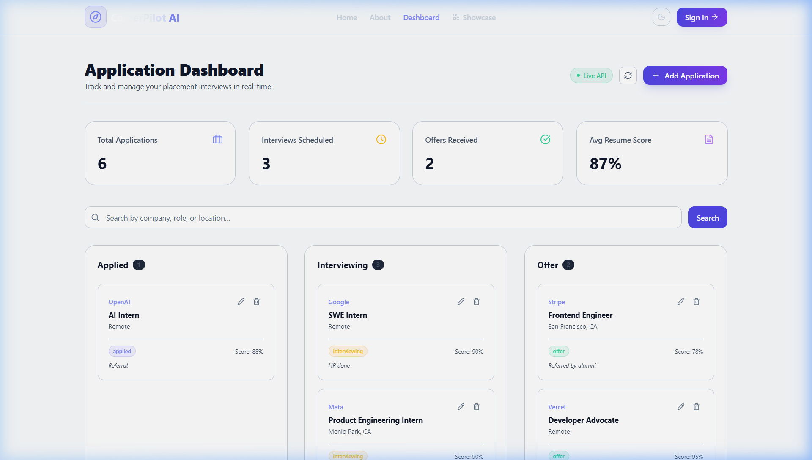
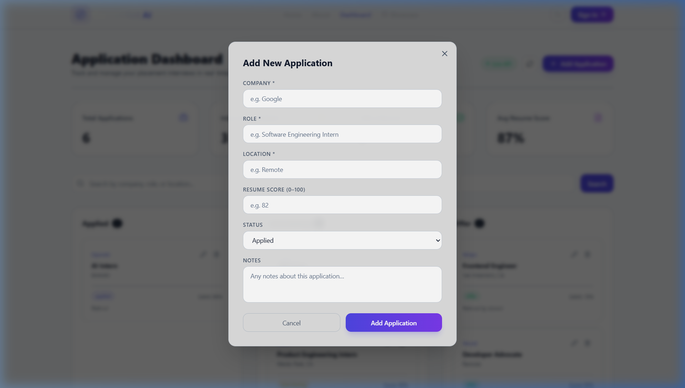
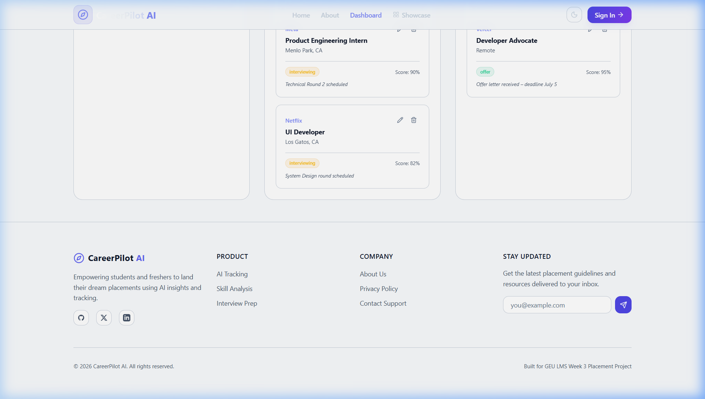

Week 4 Deliverable 3: Frontend Connected to Backend
TBI-26100454 Submitted: 29 June 2026CareerPilot AI is a full-stack web application that helps students track job and internship applications. This week, an Express.js backend was built and the React frontend was fully connected to it via REST API calls. The frontend now fetches live data from the backend instead of using hardcoded mock data.
Backend: Node.js + Express.js — running on http://localhost:5000
Frontend: React + Vite — running on http://localhost:5173
Data: In-memory array (Week 4) — database integration planned for Week 5
http://localhost:5173| Method | Endpoint | Description | Status Code |
|---|---|---|---|
| GET | /api/health | Health check — server status & timestamp | 200 |
| GET | /api/applications | List all applications (optional ?status= filter) | 200 |
| GET | /api/applications/stats | Dashboard statistics (totals, counts, avg score) | 200 |
| GET | /api/applications/search?q= | Search by company, role, or location | 200 / 400 |
| GET | /api/applications/:id | Get a single application by ID | 200 / 404 |
| POST | /api/applications | Create a new application | 201 / 400 |
| PUT | /api/applications/:id | Fully update an application | 200 / 404 / 400 |
| PATCH | /api/applications/:id | Partially update (e.g., status only) | 200 / 404 |
| DELETE | /api/applications/:id | Delete an application | 204 / 404 |
The Application Dashboard now fetches real-time data from the Express backend.
Stats cards (Total Applications, Interviews Scheduled, Offers Received, Avg Resume Score) are
populated from GET /api/applications/stats.
The Kanban board columns (Applied, Interviewing, Offer) are populated from GET /api/applications.
The green "Live API" badge in the top-right confirms the backend connection is active.

Figure 1: Application Dashboard showing live data fetched from http://localhost:5000/api/applications and
/api/applications/stats. Stats show 6 total applications, 3 in interviews, 2 offers, 87% avg resume score.
Clicking the "+ Add Application" button opens a modal form. On submit, the form sends a
POST /api/applications request to the backend with JSON body. The backend validates
the input, returns 201 Created with the new application, and the frontend refreshes
the board with a success Toast notification.

Figure 2: Add New Application modal — submits to POST http://localhost:5000/api/applications.
Fields: Company, Role, Location, Resume Score (0–100), Status dropdown, Notes.
Loading states are shown during API call; errors display as Toast notifications.
The Chrome DevTools Network tab confirms the frontend is making successful API calls to the Express backend. When the dashboard loads, two requests are fired in parallel:
GET http://localhost:5000/api/applications → 200 OKGET http://localhost:5000/api/applications/stats → 200 OK
Figure 3: Chrome DevTools Network tab showing successful API calls from frontend to backend.
Both /api/applications and /api/applications/stats return HTTP 200 status.
The Dashboard component (src/pages/Dashboard.jsx) was rewritten to:
useEffect to fetch from /api/applications and /api/applications/stats on mountGET /api/applications/search?q=CORS Configuration: Backend allows origin http://localhost:5173 via the cors npm package.
Methods allowed: GET, POST, PUT, PATCH, DELETE.